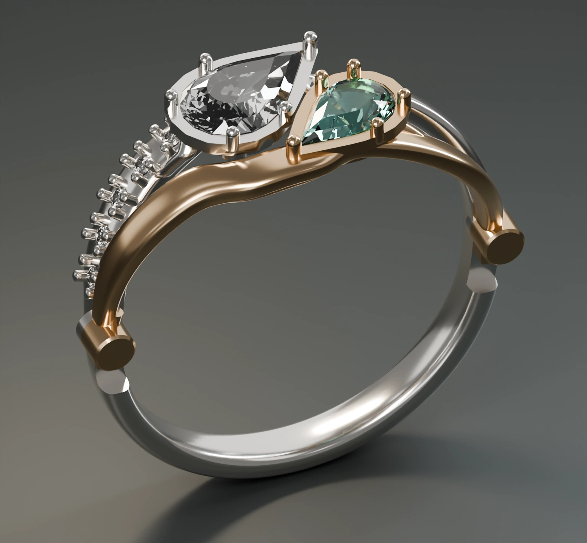
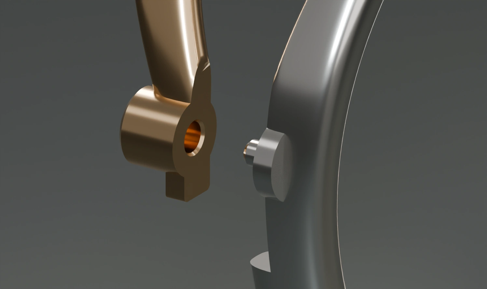

Кольцо в двух сплавах · R3
Дуэт
Бриллиант и индиголит обращены острыми концами в разные стороны. Вдоль белого плеча идут пять круглых бриллиантов диаметром 1 мм. Камни на этом рендере показаны в открытых крапанах до обжима.
Рассмотреть конструкцию- Белое золото
- Шинка и оправа бриллианта
- Золото цвета шампанского
- Встречная лента и оправа индиголита
Рабочая модель
До обжима
Поверните заготовку и проследите сборку от двух металлических частей до установки последнего камня.
Загрузка модели…
Открытые оправы
Вынутые камни открывают вид на посадочные места и свободные концы крапанов.
- Штифты
- Круглое гнездо
- Продолговатое гнездо
- Размер камня
- Крепление
Потяните модель, чтобы повернуть. Колесо мыши или жест двумя пальцами меняет масштаб.

Макро · разборка на 2,4 мм
Стык на плече
У площадки со штифтом лента шампанского золота заканчивается притуплённой кромкой. Сравните её с прежней формой в том же ракурсе.
В контрольных сечениях оба конца ленты дали минимум 0,560 мм при цели 0,40 мм. В нижнем поясе белой корзины поперечный минимум составил 0,555 мм при цели 0,50 мм.
Посмотреть результаты замеровМатериалы мастерской
Комплект «Дуэт»
Заготовки двух сплавов в общей системе координат, вставки и результаты проверки сборки. Размеры указаны в миллиметрах. Перед печатью проверьте участки у оправ обеих груш. Их координаты отмечены в протоколе.